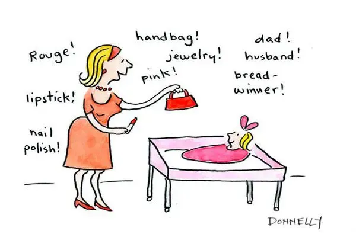
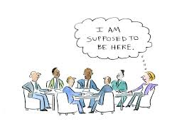
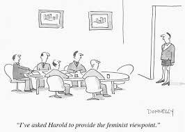
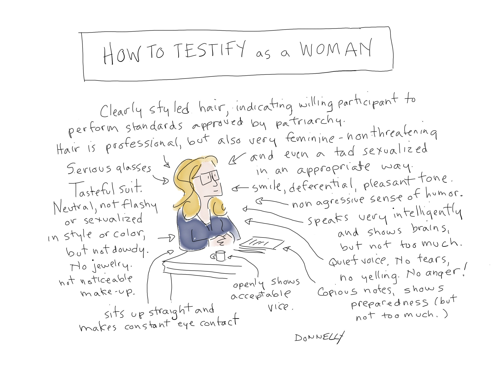
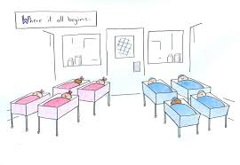
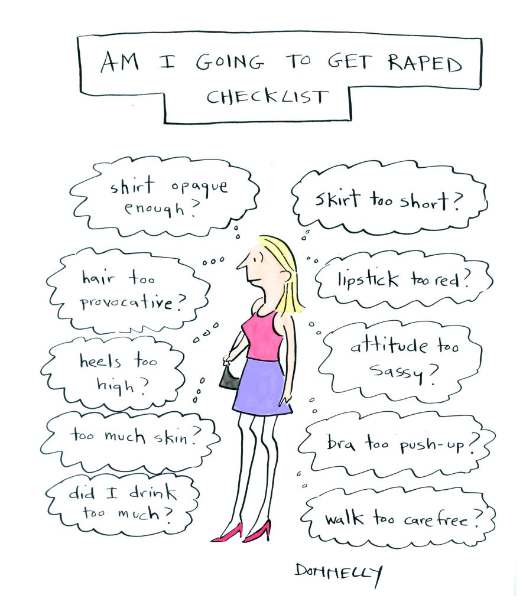
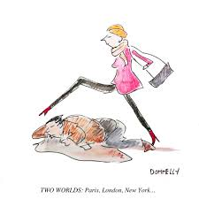

Guiding question: How do visual choices lead the viewer to the message?
Thesis: The poster guides attention with the dominant element, builds tone with colour and contrast, and closes with clean type and a clear call to action for the target audience.
Liza Donnelly - humor for change
Core ideas
Gender expectations, fear of womanhood, pressure to conform
Imperatives in culture, "Eat this, wear this, do this, buy this, want this"
Media saturation, images that teach roles early
Home as first imprint, colour coding like pink as a signal
Drawing as voice, approval without speaking
Reversal captions that subvert common sayings
One laugh at a time, small shifts add up
Methods and effects
Juxtaposition: exaggerated figure beside a plain crowd to show what stands out
Hyperbole: big hair or oversized bag as pressure made visible
Irony: "I want to look like X, but not seem like X" - image vs identity
Intertext: public figures used as mirrors for trends
Register shifts: demotic captions for direct connection
Visual contrast: dark line on pale ground for fast focus
Punchline timing: short line after a setup image
Model PEEL for Baby girl expectation
Point: Donnelly uses imperative language and colour coding to show how gender roles are taught from birth.
Example: The mother lists commands - "Rouge!", "lipstick!", "handbag!", "pink!" - while a baby lies in a pink blanket.
Explanation: The staccato imperatives imitate advertising and social advice. Pink works as shorthand for a preset identity. Words plus palette turn infancy into a lesson in how to perform "girl".
Link: By pushing the list toward absurdity, the cartoon makes the script visible and invites the viewer to question it.

Safety on tone
Keep analysis neutral and precise. Do not label subjects. If a caption uses harsh or sensitive language, name the register and explain the effect on the reader. Aim for clarity and care.
Paper 2 - Literary Comparison
Compare works with focus on theme, method, structure, voice, and context. Use precise quotes and keep the line of argument tight.
Theme mappingNarrative methodVoice and toneStructure and formContext linksComparative claims
IO Plan - desire for human connection
Texts
Literary: The Smiths, "There Is a Light That Never Goes Out"
Non-literary: Select one Donnelly cartoon above
For the real IO, pair one literary with one non-literary. Use one short quote per text.
Flow
Hook, text type, writer, context, audience
Guiding question and thesis
Verse 1, zoom in
Chorus, shift in tone
Outro, final mood
Whole work and impact
Thesis
The song turns risk into a tender wish to show how far isolation can push the need to belong. It uses a confessional voice, night drive imagery, anaphora, and a light motif that suggests safety.
Key evidence
And if a double decker bus crashes into us, to die by your side is such a heavenly way to die.
One short quote at a time, analyze diction or syntax
Close on why it matters for readers then and now
IO - global issue quick grid
Step
What to say
How to show skill
Define
Transnational, broad impact, seen in both texts
One line definition, no vagueness
Construct
How each text builds the issue
Method + effect + audience
Synthesize
Where they align or differ
Compare function, not topic
Impact
What the audience is meant to think or do
Link to purpose, one sentence only
Glossary
Key terms for fast reference. Add more as needed.
Word
Meaning
Example
Register
Level of formality in language
Courtroom vs chat with friends
Demotic language
Everyday speech, may include slang
Name the register, not the person
Anaphora
Repetition at the start of lines or clauses
Take me out... repeated
Motif
Recurring element or image
Light as safety in a song
PEEL
Point, Example, Explanation, Link
Use for clean paragraph logic
Assessment checklist
Surname only in academic work
State text type in the first line
Quote once per text in the IO
Use PEE or PEEL for each body paragraph
Annotate first, plan, then write
No slang, no cliches
Vary punctuation, aim for nine marks across the piece
End with a clear final line that answers the question
Name methods and effects, then audience impact
Notes
Image analysis, guidance
Keep claims grounded in what is visible. Avoid guessing age or motives. Use neutral terms. If a text uses offensive language, name the register and explain the effect, but do not repeat it in your own voice.
Gaze: where the subject looks
Setting: props and light frame the subject
Contrast: foreground vs background, warm vs cool colours
Symbols: shared cultural links
Language: if captions use demotic language, log the register, purpose, and impact
Rewrite example, safe academic voice
Before: Labels the subject and assumes motives.
After: The baby's blanket and the list of beauty items create a contrast between infancy and performance. The choice is designed to unsettle the viewer and raise questions about how gender roles are taught.
Fields of inquiry for IO
PowerJusticeBelonging and othernessEthics of careIdentity